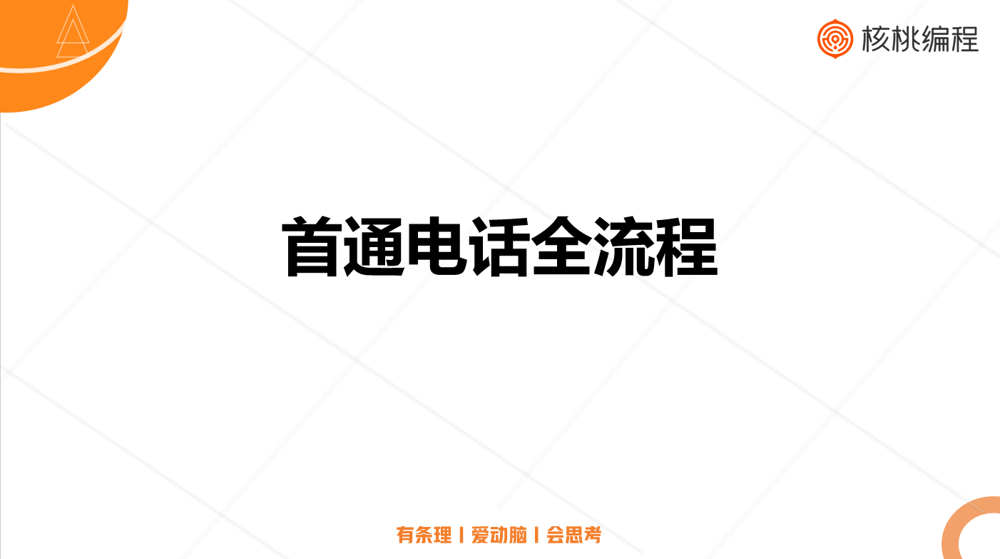
各位老师，这节课要给大家讲的是首通电话的全流程。这通电话，对我们和家长来说，都是非常重要的第一印象。大家换位思考一下：一个孩子坐在教室里，人没有离开、没有跑出教室，是不是就代表这节课孩子听进去、有收获了？放到我们首通电话里也是一样：家长没有挂断电话，不代表我们这通电话就打好了、沟通有效。
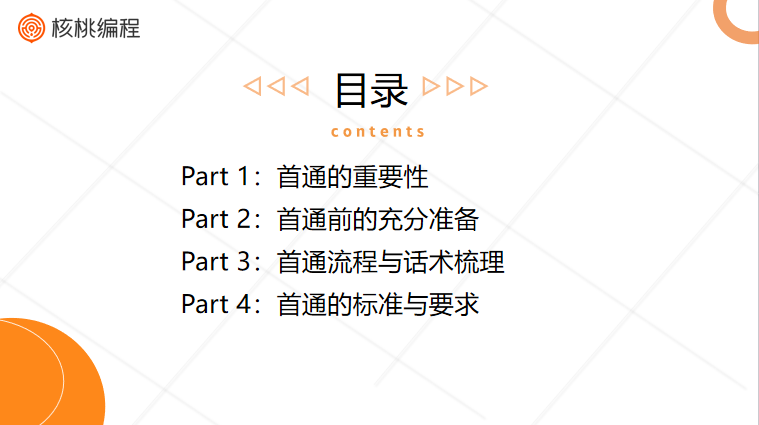
先说清楚首通是什么时候打的：首通，是在家长付完钱之后，你作为课导老师和家长的第一通电话。咱们面对的家长，孩子已经在核桃学完了第一阶段六个月的课程，现在要进入第二阶段的图形化算法长期班。这些家长对编程、考级、赛事都有一定的认知，也已经习惯了上一任老师的风格。这时候来了一个新老师的电话，家长心里难免会掂量一下，这个新老师行不行？所以这通电话打得好不好，直接决定了家长对你的第一印象。打个比方，我今天上课穿一身温柔风的衣服，或者穿一身朋克风的衣服，大家对我的第一印象，自然就会往那个风格去靠。电话也是一样，家长看不到你，但能从第一通电话里听出来，你专不专业，温不温柔，细不细心。这些就是家长在首通里最在意的东西。所以今天这节课，咱们就按目录上的四个部分来讲：第一，首通的重要性；第二，首通前的充分准备；第三，首通流程与话术梳理；第四，首通的标准与要求。
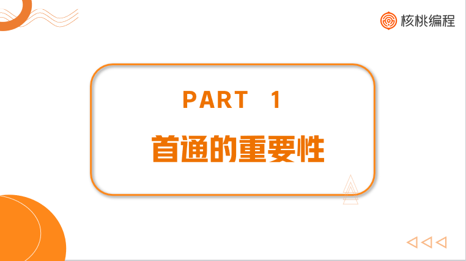
先来看第一部分，首通的重要性。除了刚才说的第一印象，这通电话还有哪些价值，让它非打不可？咱们一起来看。
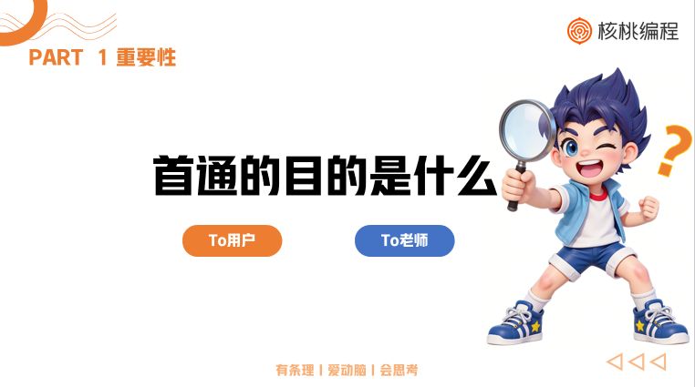
先说目的。首通的目的可以从两个角度来看，一个是对用户，一个是对老师。对用户来说，我们要做到三件事：第一，和家长建立信任关系；第二，让家长清楚咱们的课程是什么样的，老师的服务是什么样的；第三，针对性地解决家长的疑虑。比如二阶段的家长常会关心，换了新老师孩子能不能适应，接下来的算法课难不难，这些顾虑都要在电话里接住。对老师来说，核心目标也是三件事：第一，了解家长和孩子的基础信息；第二，挖掘孩子潜在的学习需求和痛点；第三，判断这个用户是什么类型的，弄清楚家长当初为什么给孩子报编程课。这里提醒一下，首通的目标里，没有当场说服家长续费这一条，也不是一上来就给孩子安排赛事获奖方案。那大家想一想，首通的价值体现在哪两个方面？
互动题
首通的价值体现在哪两个方面？
- A. 用户、老师
- B. 学生、家长
- C. 课导、班主任
- D. 家长、主管
选错后：重讲本页重触发
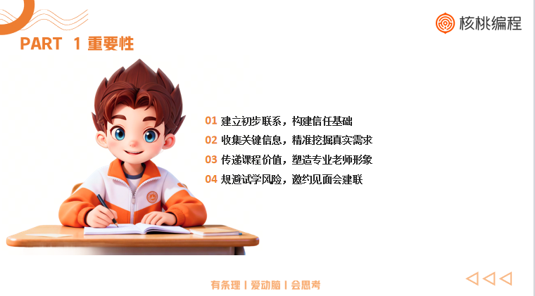
这通电话对家长同样有价值。目的清楚了，再具体看看首通能带来哪四个价值。第一，建立初步联系，构建信任基础。家长是带着期待报的课，这通电话就是你和这个家庭的第一次见面。第二，收集关键信息，精准挖掘真实需求。家长和孩子的基础信息都要收集，比如孩子几年级了，在学校成绩怎么样，性格怎么样。这些信息在之后带班的过程中非常有用，比如你要给孩子做赛事规划，或者到了一些关键节点，有了这些信息，你才能更清楚地回应家长的疑虑。第三，传递课程价值，塑造专业老师形象。要让家长感觉到，这个老师懂教育、懂孩子，把孩子交给这个老师是放心的。第四，规避试学风险，邀约见面会建联。二阶段开课的前几周是试学期，首通里要把可能存在的风险记录下来，后面才有机会提前干预，千万不能等到问题已经爆发了再处理。同时，在电话里把见面会邀约好，为后续和家长建立更紧密的联系打下基础。最后我要强调一句，这些家长已经花了几千块钱进了咱们的班，孩子也实实在在学了半年，他们已经认可编程的价值了。所以首通的核心任务，不是去告诉家长编程有多厉害、多有用，而是让家长相信，我能把孩子带好、教好，让孩子愿意持续学下去，为后续的续报打好基础。
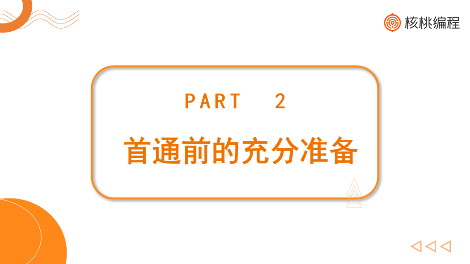
接下来进入第二部分，首通前的充分准备。老话说，不打无准备之仗。家长是带着期待报的课，如果你打过去，连孩子几年级、上一阶段学得怎么样、当初为什么报课都不知道，家长的第一反应就是，这个新老师不太靠谱。第一印象一旦打坏，后面很难挽回。尤其是二阶段的家长，已经和上一任老师相处了半年，心里自然会拿你和上一任老师做比较。所以准备工作，就是这通电话的地基。
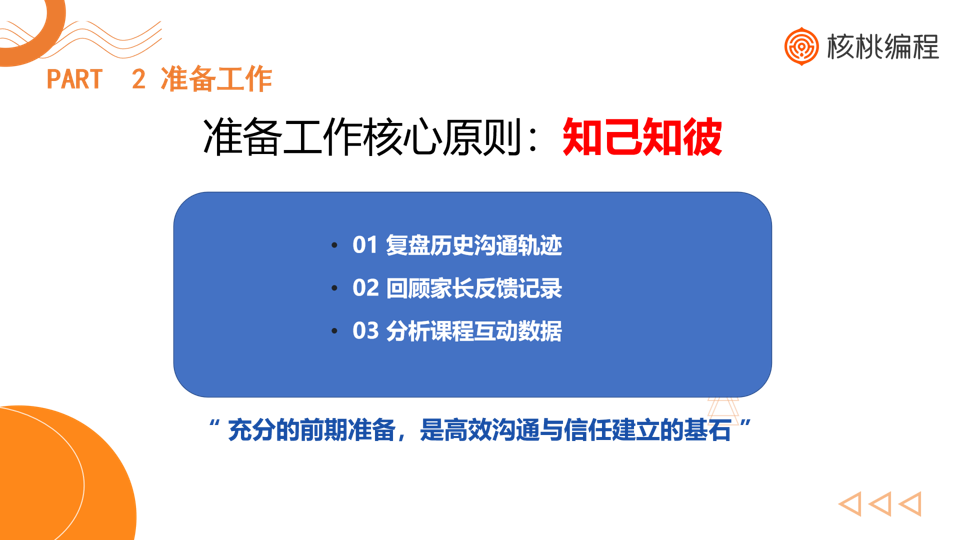
准备工作从哪里入手？核心原则就四个字，知己知彼。具体要做三件事。第一，复盘历史沟通轨迹。翻一翻这个用户过往的咨询记录，还有和上一任老师的聊天记录，梳理家长问过哪些细节、聊到过哪些节点，里面很可能藏着意向线索，或者还没说出口的异议。第二，回顾家长反馈记录。从反馈里找出这个家庭最核心的教育诉求，提前预判家长可能会问什么、顾虑什么、关注什么。比如家长之前反复问过考级的事，那首通里大概率还会问，你就得提前想好怎么接。第三，分析课程互动数据。看看孩子上一阶段的互动频次，锁定孩子的兴趣点在哪；再结合上课时长和互动数据，判断孩子是自信型还是内向型，是不是喜欢玩游戏，有没有不认真上课的情况。这三件事都必须在打电话之前做完，而不是电话接通了再临时去翻记录。页面下方这句话大家记一下：充分的前期准备，是高效沟通与信任建立的基石。好，来看一道题，“充分的前期准备”被称为什么的基石？
互动题
“充分的前期准备”被称为什么的基石？
- A. 高效沟通与信任建立
- B. 续报转化
- C. 赛考规划
- D. 见面会邀约
选错后：重讲本页重触发
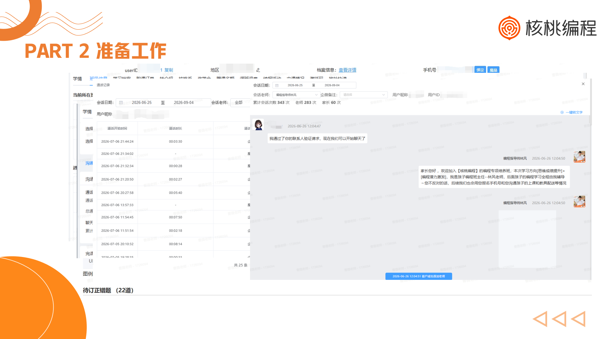
准备工作的核心原则就是知己知彼。原则讲完了，来看具体怎么操作。这些动作都要在通话前完成。我们的CRM系统里，可以看到家长和上一任老师沟通的基本情况，包括历史聊天记录、通话记录等等。看的时候重点盯两件事，一是警惕退费风险，二是看清家长的报课需求。具体看哪些地方呢？先看班级信息，包括当前所在班级、进出班记录，孩子之前上过几次课，还有通话次数、接通率、平均通话时长、聊天记录次数，这些都能查到。再看通话记录和聊天记录，能听录音就听录音，能看聊天就看聊天，重点看家长说过什么，上一任老师是怎么跟进的。举个例子，大家看截图里这组数据：通话25次，接通率88%，平均通话时长3分19秒；聊天累计343次，其中老师发了283次，家长只回了60次。这说明什么？说明这是一位比较被动、话不多的家长。那你这通电话就要多引导、多提问，而不是干巴巴地介绍课程。做完这些，你要达成的目标只有一个，让家长感觉到核桃编程前后衔接很靠谱，老师们会认真交接孩子的具体情况，报课之前有人管，报课之后更有人管，而且新老师能做得更好。
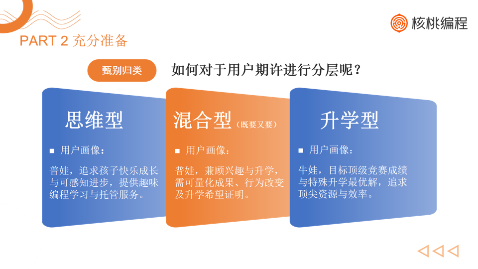
大家要注意，每个家庭的诉求都不一样。有的家长想让孩子升学，有的想锻炼思维，有的就是先试试看。所以光准备还不够，还要甄别归类。看完沟通记录之后，要学会给用户分层，并且及时记录到学情表里。怎么分？我们可以根据自己掌握的轨迹信息，或者和上一任老师沟通，先做初步判断，大致分成三类。第一类，思维型。用户画像是普娃，家长追求的是孩子快乐成长、有可感知的进步，我们提供的是趣味编程学习和托管服务。第二类，混合型，也就是既要又要。用户画像也是普娃，家长兼顾兴趣和升学，需要看到可量化的成果、孩子行为上的改变，以及升学希望的证明。第三类，升学型。用户画像是牛娃，目标是顶级竞赛成绩和特殊升学的最优解，追求的是顶尖资源和效率。比如家长在上一阶段就反复问过比赛和考级，那就可能偏混合型或升学型。不过要注意，聊天记录和轨迹只能帮你做个初步判断，家长的真实想法，还得在首通里通过提问去确认。那大家想一想，思维型用户的画像是？
互动题
思维型用户的画像是？
- A. 普娃，追求孩子快乐成长与可感知进步
- B. 普娃，兼顾兴趣与升学
- C. 牛娃，目标顶级竞赛成绩与特殊升学最优解
- D. 牛娃，追求快乐成长与趣味学习
选错后：仅弹正确提示继续
正确提示：我们还需要自己跟家长来打电话了解情况切实的去分层，家长的需求是有可能会变动的
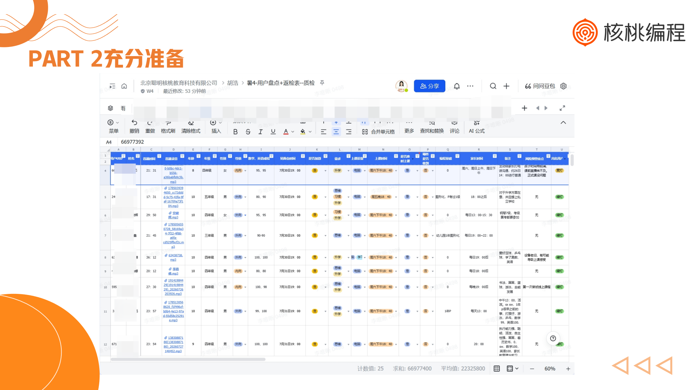
轨迹只能帮你初步判断。分完层，打完电话之后，一定要填写学情表，把了解到的信息记录下来，越细越好。我们手上的用户很多，不可能把每个家庭的诉求都记在脑子里。学情表填得及时、填得完整，任何时候你都能迅速查到这个家长的信息，做到任何阶段都知己知彼。后续入组之后，学部也会提供统一的模板，大家认真记录就可以了。来看一张真实合格的学情表。表头有用户ID、姓名、首通时间、首通录音、年级、性格、成绩、需求、上课设备、编程基础、风险预警重点这些字段。最右边两列是风险预警重点和高危用户，用红、黄、绿三种颜色标记。比如有个孩子，备注写的是孩子时间排满，课前直播来不及，第一次试课，风险预警标了黄灯。这类家长就要置顶微信，重点跟进，课上也要重点盯着孩子的状态，提前规避风险，多做一些额外的服务去维护。红灯代表的就是退费风险的用户，刚开始就提到退费，或者一直联系不上，上阶段就多次缺课，这些都是需要开课前额外多关注的用户。绿灯的家长正常维护就好，但也不能掉以轻心，家长的想法是会变的。这就是分层的意义，信息越全，你打电话的时候心里越有底。
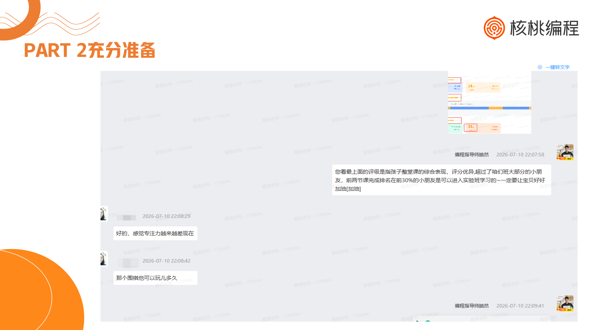
下面来看几个真实案例，都来自后台的录音和聊天记录。大家重点看，家长在和班主任的沟通里，会抛出哪些自己在意的点，或者希望老师重视的点。第一个案例，老师在给家长反馈孩子的课堂表现，说孩子评分优异，超过了班上大部分小朋友。结果家长回了一句，感觉现在专注力越来越差。这句话说明什么？说明家长很想提升孩子的专注力，担心孩子学习达不到想要的效果。这种时候，老师怎么回就特别关键。如果你是这个老师你会怎么做？
互动题
如果你是这个老师你会怎么做？
- A. 继续夸奖孩子，不理会，家长听到夸奖就会放心。
- B. 接着家长的话回复专注力的问题。
选错后：直接继续

很明显，应该接着家长的话，去回应专注力的问题。来看这位老师是怎么做的。老师没有对家长的担忧置之不理，而是发出了第一课的知识点汇总，并且告诉家长，这些知识帮助宝贝理解了如何按照顺序执行任务，学会一步一步分析、解决问题，在生活中做计划、理步骤也会更清晰。这就把编程学习和家长关心的专注力、条理性联系在了一起。紧接着，家长又说孩子现在写字难看，阅读理解差，还有专注力和钻研精神不够。老师没有回避，用一段语音给出了回应：写字可以买些练字帖让孩子去练；阅读理解差，其实背后是思维能力的问题，很多孩子读完之后没有做总结、做分析。老师针对家长的顾虑给出具体的建议，家长自然就安心了。
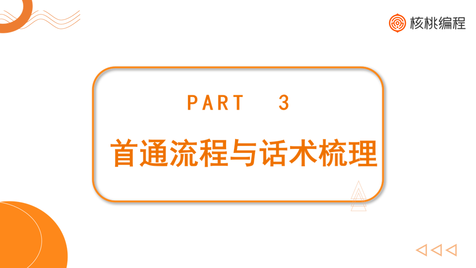
再看一个案例，这是一通三十多分钟的通话录音。家长聊到夏天的期末考试，说本来以为孩子会考得很差，后来发现题都会做，就是马虎。老师马上接住了马虎这个点，从编程的角度解释：编程是一门非常严谨的学科，孩子但凡多写一个代码、少写一个代码，或者写错一个代码，整个程序就会出现bug，走不通，没办法再往下进行。通过这个解释，老师把编程和孩子的审题能力、细心程度联系了起来。所以请大家记住这两个案例的共同点：家长说什么，你就接什么；家长担心什么，你就给什么方案。千万不要自说自话。
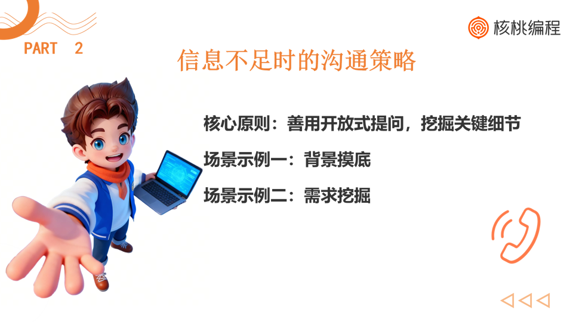
学会了怎么接住家长的顾虑，但信息总有不全的时候。如果准备阶段的信息就是不够，比如家长没怎么接过电话，也没怎么和上一任老师沟通过，但还是报了咱们的课，那怎么办？办法只有一个，在通话中用提问把信息补回来。核心原则是，善用开放式提问，挖掘关键细节。什么叫开放式提问？就是不问那种只能回答是或否的问题。封闭式问题，家长答完一句，你就不知道怎么往下接了，通话会很尴尬，信息也补不全。开放式提问，是引导家长从多个角度表达，把信息差补上。也千万别因为信息不够，就自己去猜家长的诉求。来看两个场景示例。场景示例一，背景摸底。不要问孩子之前学过编程吗，这种问题家长一句学过或者没学过就结束了。可以换成，孩子之前有没有接触过编程相关的内容、课程或者小游戏呢？接触过和学过是两个概念，家长会多说很多信息，你还能顺带了解孩子的兴趣程度。放到二阶段的家庭，也可以问，这半年学下来，您觉得孩子在哪些方面变化最明显？场景示例二，需求挖掘。不要问您希望孩子提升成绩吗，可以这样问，您希望孩子通过学习编程，在逻辑思维、动手能力或者其他方面，获得哪些具体的提升？你给家长几个方向，家长就更容易说出真实的期待，你也就知道这通电话后面该往哪里使劲。

首通前的准备工作学完了，接下来是今天最重要的部分，第三部分，首通流程与话术梳理。

前面我们学完了理论，接下来梳理一下这通电话到底该怎么打。首通的标准框架分三个环节：破冰立人设、挖需下切法、收尾固化信任。第一个环节是破冰立人设。了解完用户情况之后，电话接通第一时间，要亲切温柔地告诉家长，我为什么给您打这个电话，简单介绍一下自己的身份和职责。接着和家长确认上课相关的信息，比如上课时间、孩子上课用的设备，收货地址也要核对清楚。基础信息确认完，就进入第二个环节，挖需下切法，这是整通电话的核心环节。先和家长确认，家里平时是谁负责孩子的学习，在这个基础上去挖需求。然后讲一讲算法阶段的课程安排和价值，问一问家长的需求点，了解清楚之后，带班期间就能有针对性地给孩子做规划。再问问孩子前面上课有没有遇到卡点。同时，可以结合孩子之前的赛考成绩，简单做一些分析，为接下来第二个level的赛事招报做个小小的铺垫。注意是铺垫，不是当场推销。比如孩子上一阶段参加过比赛，你就可以顺着成绩聊聊还有哪些提升空间。通过这些内容，家长了解了你，你也摸清了家长的需求。最后是第三个环节，收尾固化信任。电话最后要把重点内容总结一下，再好好结束通话。挂了电话之后，把这些内容在微信上再发给家长一遍，做好微信闭环。收尾的目的不是再去挖需求，而是再次强化这通电话里沟通的内容，把信任固定下来。最后，整个电话过程中，老师们一定要做到情绪饱满贯彻始终、人设建立形象饱满。
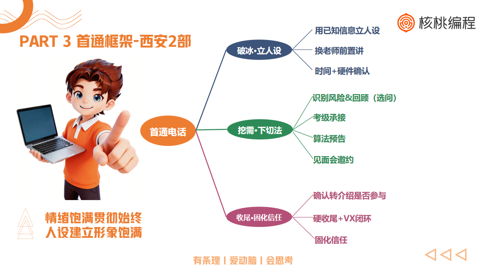
前面我们学完了理论，接下来梳理一下这通电话到底该怎么打。首通的标准框架分三个环节：破冰立人设、挖需下切法、收尾固化信任。先明确一点，你班上的用户都已经学了半年编程，家长和孩子对我们的上课模式、老师的带班方式都有一定了解了。所以在第一个环节破冰立人设里，作为即将带孩子的新老师，你要做的第一件事，就是用已知信息立人设。用你提前了解到的孩子情况告诉家长，我和前任老师已经针对咱们孩子的情况做过交接，我是了解孩子的老师，不是一个什么都不知道的新老师。比如你能说出孩子上一阶段上课的状态、擅长哪些内容，家长一听就知道你是做过功课的。第二件事，换老师要前置讲，主动跟家长说明，换老师是因为课程升级了，所以给孩子换了一位更专业的老师。第三件事，时间加硬件确认，把上课时间、硬件材料这些基础信息跟家长确认清楚。接下来进入第二个环节，挖需下切法，这是首通的核心环节。第一部分是识别风险和回顾，这部分是选问的。逐字稿上有几部分内容，大家可以看一下，针对你在扒轨迹时发现的潜在风险点，在这里先问问家长。风险了解得差不多之后，一定要记录到学情表上。下一部分是考级承接，了解一下孩子上个学期有没有参加过比赛或考级，问问家长对比赛的需求和看法。然后是算法预告，给家长讲讲算法阶段的价值和课程内容，也可以根据家长的需求有针对性地讲。接着是见面会邀约，跟家长确认好见面会的时间。最后是第三个环节，收尾固化信任。先确认家长是否想参加转介绍活动，然后硬收尾，把重点信息在微信上再跟家长闭环一下，强化这通电话的内容，把信任固定下来。注意，收尾的目的不是去明确需求，需求在挖需环节就该挖完了。最后，整个电话过程中，老师们一定要做到情绪饱满贯彻始终、人设建立形象饱满。
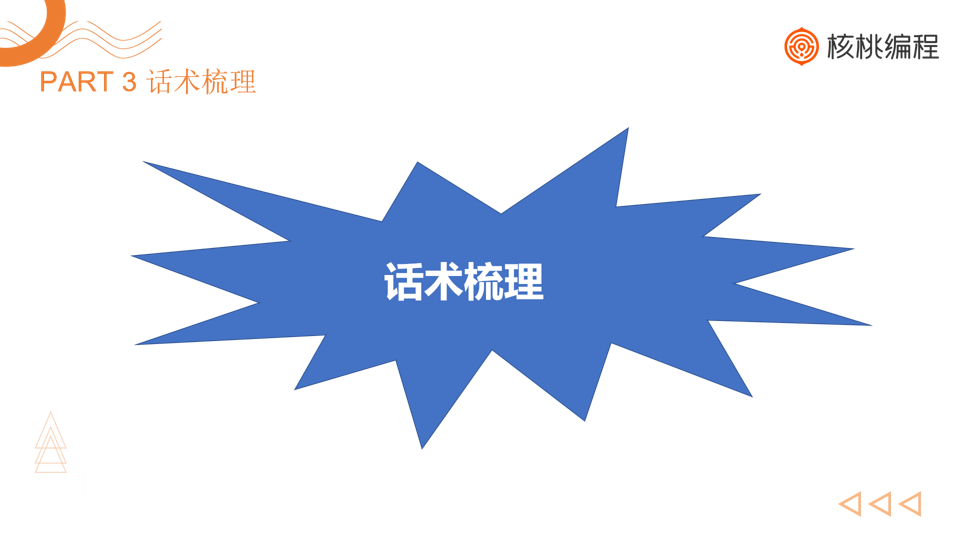
前面我们学完了理论，接下来梳理一下这通电话到底该怎么打。首通的标准框架分三个环节：破冰立人设、挖需下切法、收尾固化信任。第一个环节是破冰立人设。了解完用户情况之后，电话接通第一时间，要亲切温柔地告诉家长，我为什么给您打这个电话，简单介绍一下自己的身份和职责。接着和家长确认上课相关的信息，比如学习周期、上课时间，在确认的过程中就可以顺带做一些初步的挖需，然后再确认孩子上课用的设备。基础信息确认完，就进入第二个环节，挖需下切法，这是整通电话的核心环节。先和家长确认，家里平时是谁负责孩子的学习，这位负责人一般什么时候有时间，方便后续跟您沟通孩子的学习情况。接着讲一讲算法阶段的课程安排和价值，再去了解家长和孩子的学习目标，了解清楚之后，带班期间就能有针对性地给孩子做规划。也可以问问孩子前面上课有没有遇到卡点。同时，针对孩子之前的赛考成绩，简单做一些分析，为接下来第二个level的赛事招报做个小小的铺垫。注意是铺垫，不是当场推销。比如孩子上一阶段考过级，你就可以顺着成绩聊聊下一步可以往哪个方向努力。通过这些内容，家长了解了你，你也摸清了家长的需求。最后是第三个环节，收尾固化信任。电话最后要把重点信息总结一下，用标准的结束语结束通话。挂了电话之后，把这些内容在微信上再发给家长一遍，做好微信闭环。收尾的目的不是再去挖需求，而是再次强化这通电话里沟通的内容，把信任固定下来。最后，页面左下角这两句话请大家记住：情绪饱满贯彻始终，人设建立形象饱满。

首通框架梳理完了。如果你手里已经拿到了咱们的首通话术，现在就趁热打铁，对照刚才的框架，把这份逐字稿梳理一遍，看看哪段属于破冰立人设，哪段属于挖需下切法，哪段属于收尾固化信任。然后把话术从头到尾读一遍，要带着感情读，想象电话那头就是一位刚把孩子交给你的二阶段家长。大家确认一下，是否完成熟读一遍话术？
互动题（调查，无对错）
是否完成熟读一遍话术？
- A. 是
- B. 否
选错后：直接继续
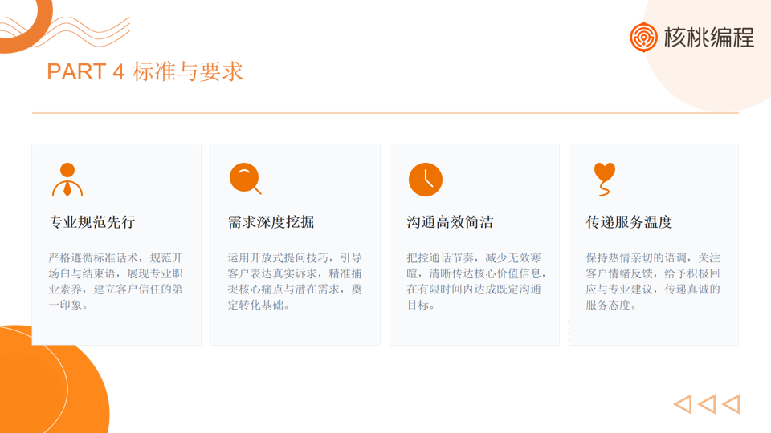
流程和话术都讲完了，最后来看，什么样的首通电话才算达标？这就是第四部分，首通的标准与要求。

刚才我们把首通电话的完整框架拆解清楚了，框架要落地，离不开这一页的四大标准与要求，这是每一通首通电话的底层准则：专业规范先行、需求深度挖掘、沟通高效简洁、传递服务温度。第一点，专业规范先行。开场白和结束语都要严格按照标准话术来，不能随心所欲。规范不是束缚，而是帮我们第一时间展现专业素养，建立靠谱的职业形象。家长接起电话的前30秒，就会形成对我们的第一印象，规范得体的表达，就是信任的起点。第二点，需求深度挖掘。这正好对应框架里的挖需下切法。不能单向给家长灌输信息，要多用开放式提问，少用是不是、对不对这类封闭式问题，引导家长把真实的想法、顾虑和期待说出来。抓住了家长的核心痛点和潜在需求，后面的规划和价值传递才能说到点子上，这也是后续转化的基础。比如家长随口提了一句，想让孩子以后去参加比赛，你就要顺着问下去，想参加哪一类，孩子目前准备得怎么样。第三点，沟通高效简洁。首通是有节奏的，要学会把控通话节奏，减少漫无目的的闲聊和无效寒暄。每一句话都要服务于沟通目标，清晰传递核心价值信息，在有限的时间里，把该同步、该确认、该挖掘的内容都落实，不拖沓、不跑题。第四点，传递服务温度。专业、规范、高效，不等于冷冰冰地背稿。打电话时家长看不到我们的表情，但能听出我们的状态，所以全程语调要热情亲切。还要敏锐捕捉家长的情绪，家长有担心、有疑问，要及时给到积极回应和专业建议，让家长感受到我们是真心为孩子考虑，而不是走流程。这四条标准是相辅相成的：专业规范打底，深度挖掘抓需求，高效沟通控节奏，最后用温度留住好感。大家后面练首通的时候，不光要背框架，还要用这四条标准给自己的通话做自检，每打完一通，都对照这四点复盘优化。好，来看一道题，“运用开放式提问技巧，引导客户表达真实诉求”属于哪项首通标准？
互动题
“运用开放式提问技巧，引导客户表达真实诉求”属于哪项首通标准？
- A. 专业规范先行
- B. 需求深度挖掘
- C. 沟通高效简洁
- D. 传递服务温度
选错后：直接继续
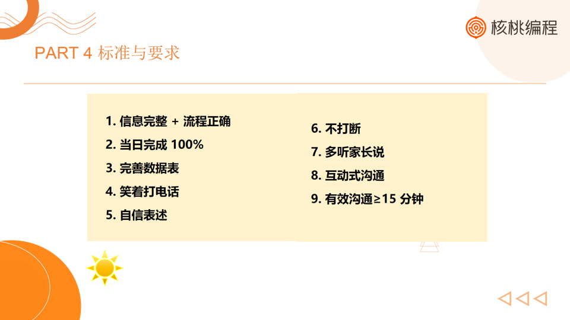
刚才讲的是四大标准，接下来这九条，是首通落地的硬性执行细则，也是大家打完每一通电话自查、质检打分的标尺，每一条都要记牢。第一条，信息完整加流程正确。严格按照首通框架走，破冰、挖需、收尾三个环节不能缺，该确认、该同步的信息全部落实到位，不跳流程，不漏信息。这套框架是很多优秀老师总结出来的经验。第二条，当日完成百分之百。首通有很强的时效性，当天的学员首通要全部打完，不积压，不拖到第二天，让家长报名后第一时间就感受到老师的重视，及时建立信任。第三条，完善数据表。通话结束不是工作的终点，打完电话第一时间，就把挖到的需求、家长的顾虑、孩子的情况和风险点全部填进学情表，不能隔天再补。学情表是后续跟进和续报的依据，记录越全，后面的服务越精准。第四条，笑着打电话。别觉得对方看不见就无所谓，微笑是能通过声音传出去的。带着笑意说话，语调会更柔和亲切，这也是传递服务温度最简单的方法。第五条，自信表述。和家长沟通不要含糊，不要怯场。我们是专业的编程辅导老师，熟悉课程，也熟悉孩子的学习路径。二阶段的家长问到赛事、考级这类问题时，你答得越有底气，家长越愿意相信你给的规划和建议。第六条，不打断。家长在表达想法、吐槽顾虑的时候，要耐心听完，不要中途抢话，哪怕是为了效率也不行。打断很容易让家长产生抵触，沟通氛围一下子就变差了。第七条，多听家长说。首通不是我们单方面宣讲，要把话语权交给家长，多听、多收集信息，才能找准家长的真实诉求，而不是自顾自地背话术。第八条，互动式沟通。拒绝单向念稿，多提问、多呼应，和家长一来一回地交流。单向输出只会让家长觉得枯燥，很容易敷衍着就把电话结束了。第九条，有效沟通不少于15分钟。这里划个重点，不是凑时长，是有效沟通。刨除无效寒暄，真正用在挖需求、聊规划、对齐问题上的时间，不少于15分钟。太短的话，需求很难挖透，信任也很难建立。这九条里，前五条是对我们自身工作动作和状态的要求，后四条是通话过程中的沟通行为准则。后面的模拟演练和质检复盘，都会对照这九条来核对。好，来看一道题，关于首通电话执行标准，以下说法正确的是？
互动题
关于首通电话执行标准，以下说法正确的是？
- A. 首通电话可以延后到次日完成
- B. 家长说话时，为了效率可以及时打断、快速引导
- C. 首通需要做到互动式沟通，有效沟通时长≥15分钟
- D. 通话中以老师讲为主，少让家长说
选错后：重讲本页重触发
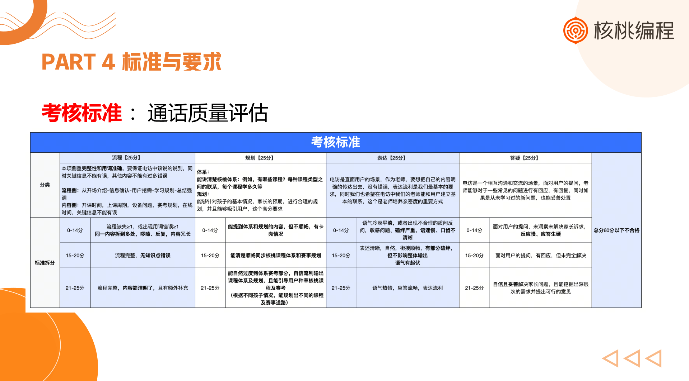
前面学了首通的框架和执行细则，那一通电话打完，到底好不好、能不能过关，就用这张通话质量评估表来打分。总分100分，分四个维度，每个维度25分，分别是流程、规划、表达、答疑。注意，总分60分以下就是不合格。第一项，流程，25分。考核两件事：一是流程完不完整，从开场介绍、信息确认、用户挖需、学习规划到总结强调，环节不能缺；二是信息准不准确，开课时间、上课周期、设备问题、赛考规划、在线时间这些关键信息不能说错。0到14分，是流程缺步骤或者有用词错误，同一个内容拆到好几处讲，啰嗦反复，内容冗长；15到20分，是流程完整、没有知识点错误，这是基础合格档；21到25分，是流程完整，内容简洁明了，还能结合孩子情况做额外补充，属于高分。第二项，规划，25分，这一项最考验专业功底。包括课程体系和个性化学习规划两部分，既要讲清楚核桃有哪些课程、课程之间怎么衔接、每种课程学多久，也要结合孩子的基础和家长的预期给出合适的路线，包括赛事方向。0到14分，是能提到体系和规划，但讲得零散、卡顿，不顺畅；15到20分，是能顺畅讲清楚课程体系和赛考规划；21到25分，是能自然过渡到体系和赛考部分，自信输出，根据不同孩子的情况规划出不同的课程和赛事道路，引导家长看懂长期价值，这是我们要冲刺的高分标准。第三项，表达，25分。电话沟通，家长看不到我们，全靠声音传递状态。0到14分，是语气冷淡平淡，磕绊多，语速不稳，甚至出现让家长不舒服的反问；15到20分，是表达通顺自然，偶尔有小卡顿，但不影响理解，语气有起伏；21到25分，是语气热情，应答流畅，亲和力强，家长听着舒服。第四项，答疑，25分，考的是应对家长疑问和异议的能力。0到14分，是抓不住家长的真实想法，回答生硬，解决不了诉求；15到20分，是有回应，但没能完全打消家长的顾虑；21到25分，是能从容解决问题，还能顺着家长的提问挖出更深层的需求，给到可行的建议，这是最高标准。总结一下，流程保证我们不漏环节，规划体现我们的专业度，表达传递我们的服务温度，答疑检验我们的应变能力，四个维度缺一不可。
恭喜大家完成本节课的学习！请用飞书扫描屏幕上的二维码，填写首通电话全流程调研问卷，把你最真实的感受告诉我们吧！填写完成后，在下面的互动题里确认一下，是否已完成问卷填写？
互动题
是否已完成问卷填写？
- A. 是
- B. 否
选错后：直接继续
题库（阶段小测 + 综合测试）
T-S01 · 阶段练习题 · 首通电话全流程·阶段1 · 答案 A
首通的价值中，“规避试学风险”后面要做的是？
- A. 邀约见面会建联
- B. 确认收货地址
- C. 说明算法价值
- D. 赛考规划
T-S02 · 阶段练习题 · 首通电话全流程·阶段1 · 答案 A
首通的价值中，“建立初步联系”是为了？
- A. 构建信任基础
- B. 精准挖掘真实需求
- C. 塑造专业老师形象
- D. 邀约见面会建联
T-S03 · 阶段练习题 · 首通电话全流程·阶段1 · 答案 A
首通的价值中，“塑造专业老师形象”是通过什么实现的？
- A. 传递课程价值
- B. 规避试学风险
- C. 收集关键信息
- D. 建立初步联系
T-S04 · 阶段练习题 · 首通电话全流程·阶段1 · 答案 A
首通时老师主动摸清孩子情况和家长真实诉求，对应首通的哪项价值？
- A. 收集关键信息，精准挖掘真实需求
- B. 建立初步联系，构建信任基础
- C. 传递课程价值，塑造专业老师形象
- D. 规避试学风险，邀约见面会建联
T-S05 · 阶段练习题 · 首通电话全流程·阶段1 · 答案 A
关于首通的4项价值，下列说法符合PPT的是？
- A. 规避试学风险，并邀约见面会建联
- B. 收集关键信息后，当场确定续报方案
- C. 传递课程价值，重点是推销赛事
- D. 建立初步联系后，就不需要再挖掘需求
T-S06 · 阶段练习题 · 首通电话全流程·阶段2 · 答案 A
首通前准备工作的核心原则，可以概括为四个字？
- A. 知己知彼
- B. 有问必答
- C. 主动推销
- D. 快速开场
T-S07 · 阶段练习题 · 首通电话全流程·阶段2 · 答案 D
下列哪项不属于P07列出的首通准备工作？
- A. 复盘历史沟通轨迹
- B. 回顾家长反馈记录
- C. 分析课程互动数据
- D. 确认上课时间&设备
T-S08 · 阶段练习题 · 首通电话全流程·阶段2 · 答案 D
下面哪一项不属于课件里划分的用户画像类型？
- A. 普娃：追求快乐与可感知进步
- B. 牛娃：目标顶级竞赛成绩
- C. 混合型：兼顾兴趣 + 升学成果
- D. 躺平型：完全不想孩子学习
T-S09 · 阶段练习题 · 首通电话全流程·阶段2 · 答案 A
P09中，针对思维型用户提供的是？
- A. 趣味编程学习与托管服务
- B. 顶尖资源与效率
- C. 可量化成果与升学希望证明
- D. 顶级竞赛成绩规划
T-S10 · 阶段练习题 · 首通电话全流程·阶段2 · 答案 B
关于开放式提问，描述正确的是
- A. 用 “是 / 否” 就能回答，快速结束对话
- B. 引导家长多说，表达真实想法，补齐信息
- C. 示例：孩子之前学过编程吗？（只能回答学过 / 没学过）
- D. 信息不足时，直接自己猜测家长诉求
T-S11 · 阶段练习题 · 首通电话全流程·阶段3 · 答案 B
首通电话标准框架是什么？
- A. 自我介绍→讲课程→催续费
- B. 破冰立人设、挖需下切法、收尾固化信任
- C. 询问学情→分析问题→安排赛事
- D. 核实信息→推送资料→预约下次通话
T-S12 · 阶段练习题 · 首通电话全流程·阶段3 · 答案 A
P16-P18的首通框架中，首通电话的第一个环节是？
- A. 破冰·立人设
- B. 挖需·下切法
- C. 收尾·固化信任
- D. 见面会邀约
T-S13 · 阶段练习题 · 首通电话全流程·阶段3 · 答案 A
挖需是首通核心环节？
- A. 对
- B. 错
T-S14 · 阶段练习题 · 首通电话全流程·阶段3 · 答案 B
关于收尾固化信任环节是为了让老师明确家长需求？
- A. 对
- B. 错
T-S15 · 阶段练习题 · 首通电话全流程·阶段3 · 答案 A
P16-P18首通框架页强调的通话状态是？
- A. 情绪饱满贯彻始终，人设建立形象饱满
- B. 语速放快，尽量缩短通话
- C. 以老师讲话术为主，减少家长发言
- D. 先讲赛考获奖，再确认上课信息
T-S16 · 阶段练习题 · 首通电话全流程·阶段4 · 答案 D
首通电话的四大标准与底层准则，不包含下面哪一项？
- A. 专业规范先行
- B. 需求深度挖掘
- C. 沟通高效简洁
- D. 优先推销续报
T-S17 · 阶段练习题 · 首通电话全流程·阶段4 · 答案 B
首通电话硬性执行细则里，要求首通完成的时效是？
- A. 3 天内完成
- B. 当日完成 100%
- C. 周末统一完成
- D. 进班3 天后
T-S18 · 阶段练习题 · 首通电话全流程·阶段4 · 答案 B
关于首通有效沟通时长，说法正确的是
- A. 越长越好，最好超过 30 分钟
- B. 有效沟通不少于15分钟，不是凑时长，要有问有答双向沟通
- C. 控制在 5 分钟以内快速结束
- D. 只要说完话术，时长不做要求
T-S19 · 阶段练习题 · 首通电话全流程·阶段4 · 答案 D
首通质量评估打分表一共四大维度，以下哪一项不属于？
- A. 流程
- B. 规划
- C. 表达
- D. 续报
T-S20 · 阶段练习题 · 首通电话全流程·阶段4 · 答案 C
考核标准“表达”维度达到21-25分的标准是？
- A. 语气冷漠平淡，或出现不合理的质问反问
- B. 表达清晰，自然，衔接顺畅，有部分磕绊，但不影响整体输出
- C. 语气热情，应答流畅，表达流利
- D. 能讲清楚顺畅同步核桃课程体系和赛事规划
T-F01 · 本章综合测试题 · 首通电话全流程·全章 · 答案 B
我们的首通电话，是在哪个节点进行的课导和家长的第一通电话？
- A. 孩子上完正式课之后
- B. 家长付完钱之后
- C. 家长刚咨询还未报名时
- D. 续报沟通的时候
T-F02 · 本章综合测试题 · 首通电话全流程·全章 · 答案 C
首通的核心目的“不”包含以下哪一项
- A. 建立初步联系，构建信任基础
- B. 收集关键信息，精准挖掘真实需求
- C. 推销赛事，引导家长报名
- D. 传递课程价值，塑造专业老师形象
T-F03 · 本章综合测试题 · 首通电话全流程·全章 · 答案 AB
关于用户分层，下列说法正确的是？（多选，选2项）
- A. 思维型：普娃，追求孩子快乐成长与可感知进步
- B. 升学型：牛娃，目标顶级竞赛成绩与特殊升学最优解
- C. 混合型：牛娃，只追求顶尖资源与效率
- D. 思维型：牛娃，目标特殊升学最优解
T-F04 · 本章综合测试题 · 首通电话全流程·全章 · 答案 B
首通考核标准中，要求有效沟通时长需要
- A. ≥10分钟
- B. ≥15分钟
- C. ≥20分钟
- D. ≥25分钟
T-F05 · 本章综合测试题 · 首通电话全流程·全章 · 答案 C
首通工作要求，首通需要在（）完成
- A. 次日
- B. 3天内
- C. 当日
- D. 一周内
T-F06 · 本章综合测试题 · 首通电话全流程·全章 · 答案 B
首通前准备工作的核心原则是
- A. 随机应变
- B. 知己知彼
- C. 快速沟通
- D. 优先转化
T-F07 · 本章综合测试题 · 首通电话全流程·全章 · 答案 B
首通电话最重要目标就是让家长直接续报交费？
- A. 对
- B. 错
T-F08 · 本章综合测试题 · 首通电话全流程·全章 · 答案 A
首通标准“沟通高效简洁”的要求是？
- A. 把控通话节奏，减少无效寒暄，在有限时间内达成既定沟通目标
- B. 严格遵循标准话术，规范开场白与结束语
- C. 运用开放式提问技巧，引导客户表达真实诉求
- D. 保持热情亲切的语调，关注客户情绪反馈
T-F09 · 本章综合测试题 · 首通电话全流程·全章 · 答案 A
混合型用户画像中，家长需要看到的是？
- A. 可量化成果、行为改变及升学希望证明
- B. 孩子快乐成长与可感知进步
- C. 顶尖资源与效率
- D. 趣味编程学习与托管服务
T-F10 · 本章综合测试题 · 首通电话全流程·全章 · 答案 A
首通结束后，需要完善数据表单，做好信息记录？
- A. 对
- B. 错
T-F11 · 本章综合测试题 · 首通电话全流程·全章 · 答案 A
考核标准“答疑”维度达到21-25分的标准是？
- A. 自信且妥善解决家长问题，且能挖掘出深层次的需求并提出可行的意见
- B. 面对用户的提问，有回应，但未完全解决
- C. 面对用户的提问，未洞察未解决家长诉求，反应慢、应答生硬
- D. 语气热情，应答流畅，表达流利
T-F12 · 本章综合测试题 · 首通电话全流程·全章 · 答案 A
老师首通前复盘历史沟通轨迹，发现家长信息很少，按PPT通话中应怎么做？
- A. 善用开放式提问，挖掘关键细节
- B. 多用是/否问题，快速确认
- C. 按自己猜测的需求直接推荐
- D. 跳过挖需，直接进入收尾
T-F13 · 本章综合测试题 · 首通电话全流程·全章 · 答案 ABC
首通前充分准备，需要做哪些工作
- A. 复盘历史沟通轨迹
- B. 回顾家长反馈记录
- C. 分析课程互动数据
- D. 提前准备好催家长交费的话术
T-F14 · 本章综合测试题 · 首通电话全流程·全章 · 答案 ABC
首通完整流程包含哪几个阶段
- A. 破冰·立人设
- B. 挖需·下切法
- C. 收尾·固化信任
- D. 催续费·促转化
T-F15 · 本章综合测试题 · 首通电话全流程·全章 · 答案 ABC
下列属于P22首通标准与要求的是？（多选，选3项）
- A. 完善数据表
- B. 笑着打电话
- C. 不打断
- D. 有效沟通≥10分钟
T-F16 · 本章综合测试题 · 首通电话全流程·全章 · 答案 AB
首通标准“专业规范先行”的要求包括？（多选，选2项）
- A. 严格遵循标准话术
- B. 规范开场白与结束语
- C. 减少无效寒暄
- D. 关注客户情绪反馈